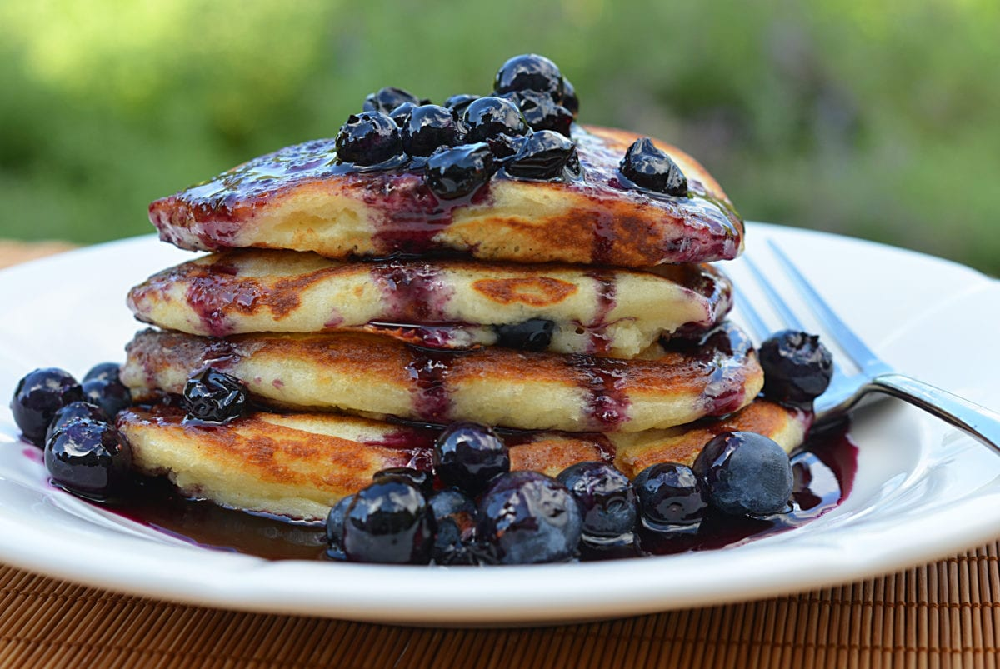

French Toast Blueberry Pancakes

French toast, blueberries, and pancakes, how can you go wrong?
Taste the deliciousness of a classic North American breakfast while keeping your gains.
Makes 2 servings (2 pancakes) | Prep Time: 5 min. | Cook Time: 8 min.
Ingredients
- 2 cup egg whites
- 4 slices regular ass white bread (up to 80 calories per slice)
- 4 packets of sweetener
- 2 tsp cinnamon
- 1 tbsp vanilla extract
- 1.5 tsp guar/xanthan gum
- 100g blueberries
- 0.5 cup low calorie syrup
- Cooking spray
Directions
- In a blender, add bread slices, egg whites, guar/xantham gum, sweetener, vanilla extract,
and cinnamon.
- Blend on high until mixture is uniform in consistency. Remove mix from the blender
and add to a fridge-safe airtight container
- (OPTIONAL): Let sit for 2-3 hours or more in the refrigerator. The longer you let
the mixture rest, the better it binds. (Note: it can be cooked right away but it’s
better if it has time to sit).
- Heat a griddle over low-medium heat. Spray griddle with cooking spray. Add mixture to griddle and
let sit for 1-2 minutes until edges appear cooked through.
- Add blueberries to the pancake in the griddle.
- Once edges start to brown and pancake appears to be visibly cooked about 2/3 of the way,
flip the pancake in the griddle and let sit another 1-2 minutes.
- Remove pancake from the griddle and serve on a plate with low calorie syrup or leftover
blueberries.